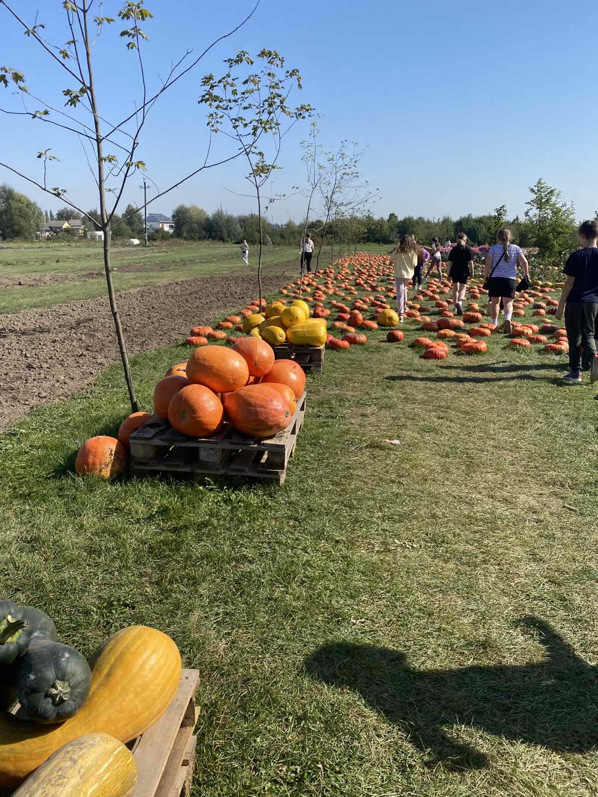
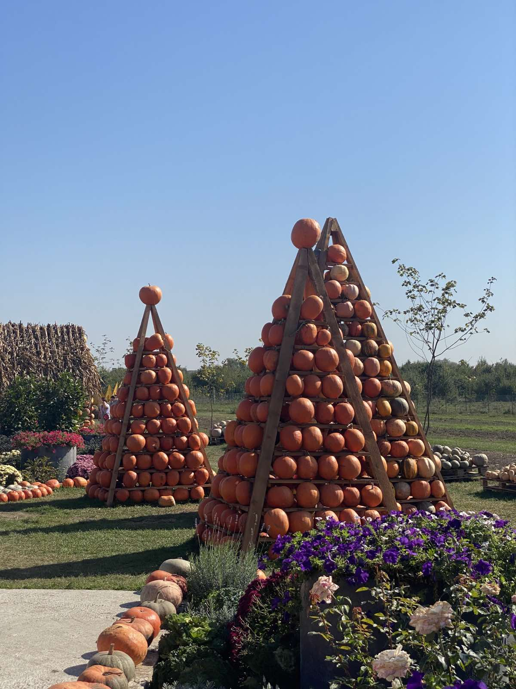
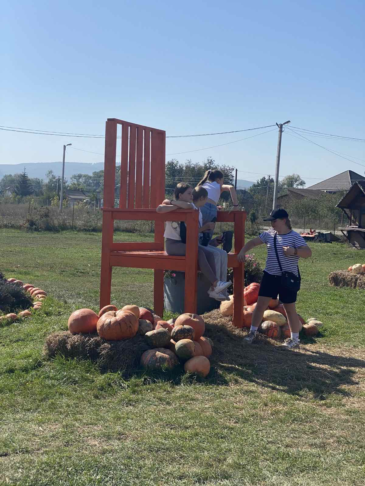
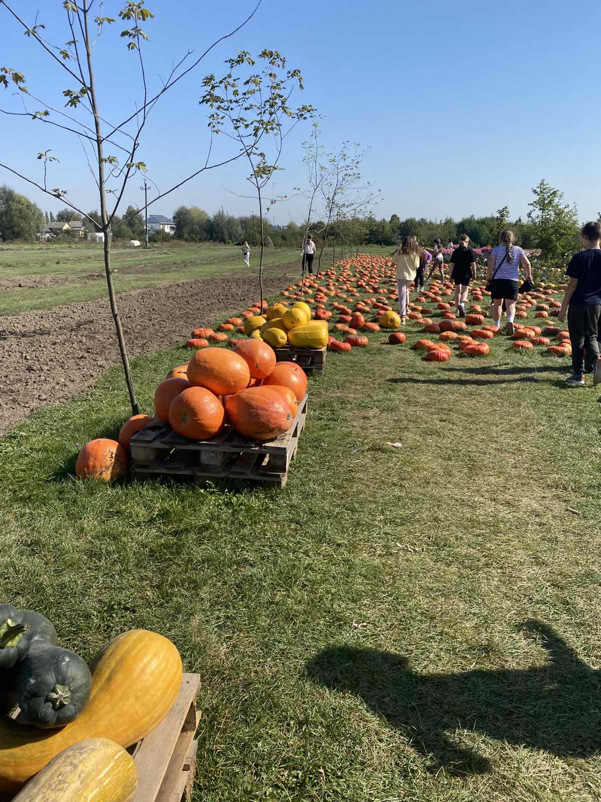
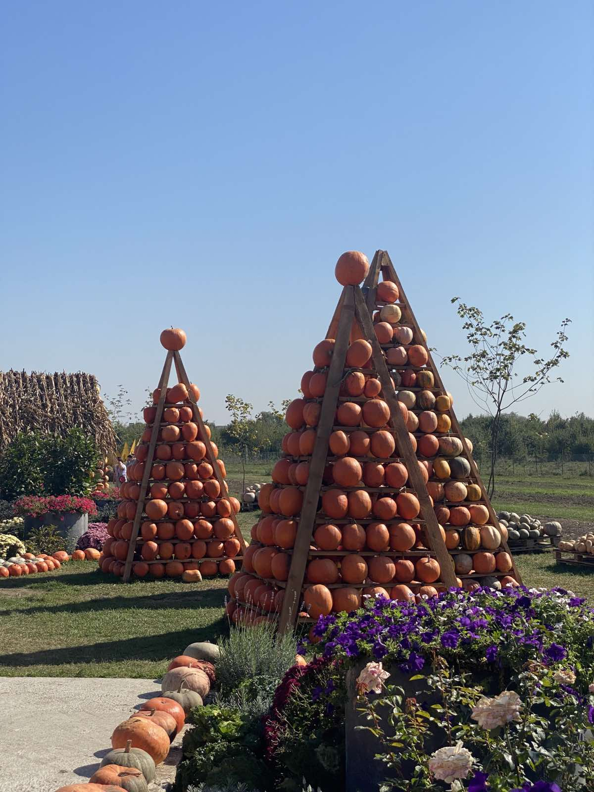

У Чернівцях є величезне гарбузове поле
Я відвідав Гарбузове поле під час екскурсії разом з друзями
Що я робив з гарбузами
ми гралися гарбузами фотографувалися з гарбузами
| поле | площа |
| гарбузове | 9 квадратних кілометрів |

Я відвідав Гарбузове поле під час екскурсії разом з друзями
ми гралися гарбузами фотографувалися з гарбузами
| поле | площа |
| гарбузове | 9 квадратних кілометрів |